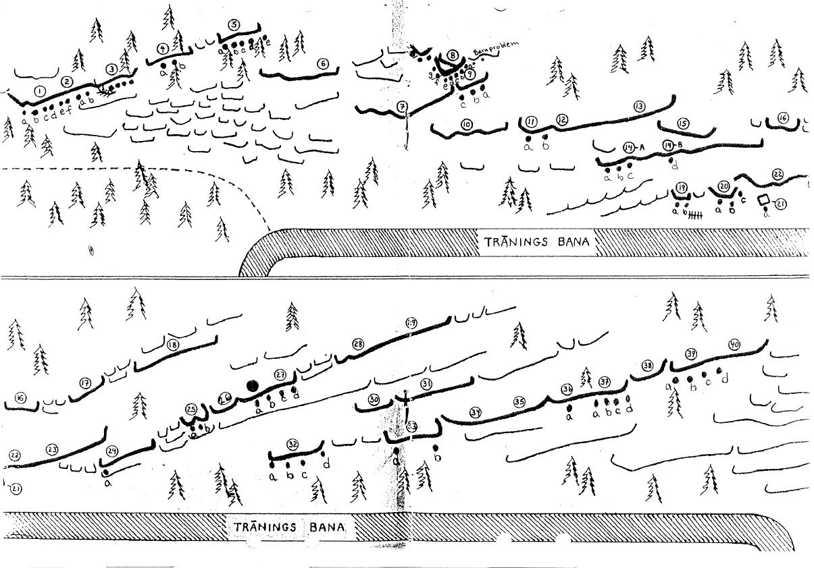
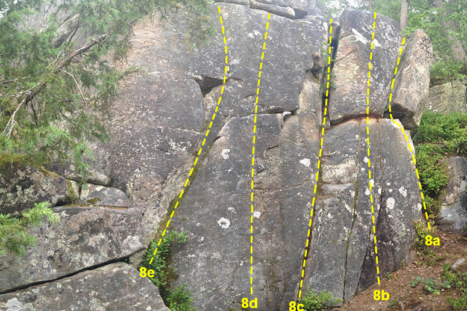

Färjestad
GPS: 59.4194963537055,13.4918975830078
Allmänt
I skogen norr om Färjestad bara kilometer från Karlstad centrum finns ett antal boulderväggar och en lite högre sva-vägg.
Vägbeskrivning
Från E18 sväng av mot Färjestad/Rud. Hittar du inte så fråga efter vägen till Löfbergs Lila Arena eller travbanan. Alla i området vet var detta ligger. Fortsätt förbi Löfbergs Lila Arena och travbanan. Sväng höger vid smådjurssjukhuset. Följ skylt och grusväg mot tyrstugan. Parkera vid klubbhuset (eller vad det är för byggnad) och gå uppför det branta elljusspåret tills det planar ut. Fortsätt ett hundratal meter(?) till. Vid skarp högersväng, en halvrutten träbänk och en eldstad(?) gå rakt fram och håll lätt vänster. Från träbänken till väggen max 1-2 minuter. Håll utkik efter stenhögar som är skapade för att man ska hitta. Sök och du skall finna.
Många har irrat omkring uppe på höjden utan att hitta rätt. Är du en sådan oturlig rackare, så forcera hellre hela klippväggen och ta dig längst ner. Följ hästspåret tills du hittar rådjursutfodringen och de block som ligger intill. Härifrån är det enklare att orientera sig.
Övrigt
Troligtvis Karlstads äldsta boulderområde. Tillhör samma förkastning som
,
och
.
Mestadels vertikal klättring på utspridda väggpartier.
Svårighetsgraden spänner mellan 3 och 7b/7b+ med fokus på det lägre registret.
Innehållet i denna förare är hämtad från en gammal pdf-fil som
haft på sin gamla hemsida. Den är inte helt uppdaterad och behöver kompletteras. Vet DU om andra problem, förstabestigare, övrig information, så hjälp gärna till genom att klicka på redigera högre upp på sidan och ändra. Det är enkelt och går snabbt!
Topo

Problemen
Varje vägg har tilldelats ett nummer i topon. bokstaven efter siffran indikerar var på klippväggen problemet finns.
Problem med nummer 32a tillhör alltså vägg 32 i topo och bokstaven a indikerar var på väggen problemet finns. Något oklart och inte självklart hur man hittar.
Förhoppningsvis kommer fotografier över klippväggarna att utgöra topo i framtiden. Till dess gäller det som återfinns i denna förare.
De problem som har en liten video-ikon (ex Bad Dog och Silent Scream) är klickbara och visar bestigning på video. Om du är på jakt efter beta eller bara undrar om du är vid rätt sten/vägg. Förhoppningsvis kan vi få fler bestigningar på film, så att arkivet utökas.
Svaväggen
Längst till vänster i Färjestad.
Flera klippartier som löper snett upp åt höger i terrängen från den stora tydliga svaväggen som utmärker området.
{|
|- valign="top"
| width="350px" |
- 1a
- Peos led
- 5b
- Start vid sidepullgrepp precis till höger om nr 1. svår mitt och lättare utsteg i 1:s spricka.
- 1b
- Miko
- 6c+/7a
- Klättra bara på facet mellan sprickorna. Ryktet säger att den är tunn, balansig och fin.
- 1c
- ???
- 5c
- Sprickan till höger om Miko.
- 1d
- ???
- 4c
- Spricka ytterligare ett snäpp höger som går snett upp åt höger.
- 1e
- ???
- 3
- Lätt led upp till hylla med träd. Sedan lätt till toppen via hyllor.
- 1f
- ???
- 3
- Insteg till höger i diedret. Sedan lätt via hyllor till toppen.
- 2a
- Ninja Turtles
- 6c+
- Längsta problemet på svaat. Använd endast den vänstra delen av facet och gå upp i den minimala sprickan på slutet. Endast gjord på topprep, så den som har tillräckligt stora cohones kan plocka en rejäl skalp här. ca 10m hög.
- 2b
- Trickle Down Theory
- 5c
- Sprickan till höger om Ninja turtles. Efter Trickle down finns 4st problem som är ca 4-4+ Numb nuts är en av dessa.
Grytan
Ett kompakt litet område. Bland träden hänger fortfarande kvar en repstege sedan intensiva träningspass under tidigt 2000-tal. Numera mest kuriosa, men prova för all del.
Grytan är mångas första kontakt med Färjestad eftersom detta ofta är första stället man stöter på när man kommer från elljusspåret. Något sandbaggat (hårdare än graden visar) kan tyckas vid första anblick, men det är förmodligen för att du inte är van vid att tassa lätt och precist med fötterna. Tidigare karlstadklättrares besök i fontan känns ibland avspeglat i graden. There's always a trick my friend. En bänk/stock finns att vila röven på mellan sessionerna.
{|
|- valign="top"
| width="350px" |
- 5a
- Cool your Jets
- 5b
- Längst till vänster, fin uppvärmning
- 5b
- Absolutely Immune
- 5c
- Tillsammans med Cool your jets Grytans mest välklättrade problem. Letar sig snett upp åt vänster och utsteg strax till höger om föregående problem.
- 5bb
- Absolutely Immune variant
- 6a
- Start vid hålet och rakt upp. Sikta på en liten knopp under utsteget. Det är nämligen här du ska upp
- 5bbb
- Execute
- 6c
- En eliminiation som startar ungefär vid hålet, men som utesluter detta. Mellan hålet och ca 1m åt höger.
- 5c
- Tight ass
- 5b
- Bara areten
Norgeväggen

- 8b
- Skulleliten
- 4
- Skutta från tvärsprickan till toppen.
- 8c
- Nästan som Norge
- 3
- Stora sprickan mitt på väggen.
- 8d
- Mettemarit
- 4-
- Endast facet undvik sprickorna på Nästan som Norge och Juleribba.
- 8e
- Juleribba
- 3+
- Gå längs den vänstra sprickan.
- 8f
- Aretén
- 4-
- Runt hörnet på stenen. Startar på lilla hyllan.
- 8g
- Hjältarna från telemarken
- 4-
-
Silent Scream väggen
Området ligger mellan Norgeväggen och Rådjursutfodringen nere vid träningsbanan. Från rådjursutfodringen ska du upp en nivå i terrängen och 50(?) meter åt vänster. Kommer du denna vägen kommer du se väggen i samma stund som du går in i den. En enbuske hänger ut över toppen. Operation fogsvans har aldrig verkställts, trots att många tänkt tanken. En klassiker gör det värt att leta sig hit och blir namnsättande för hela området.
{|
|- valign="top"
| width="350px" |
- 11a
- Silent Scream
- 6c+
- Läckert problem som bjuder på sidoförflyttningar med tassiga fötter och crimpiga fingrar innan skick till bra kant. Börja till höger på väggen och leta dig snett upp åt vänster. Soft enligt vissa, men oavsett en färjestadklassiker!
- 11b
- Hot Tuna
- 5a
- Sittstart
- 11c
- Gay bikers on acid
- 5a
-
- 14c
- Pissing in the Wind
- 4+
-
Rådjursutfodringen
Nu har vi letat oss ner till övningsspåret för travhästar som är nere "i dalen" i Färjestad. Utfodringsplatsen är kvar (2011). Dvs hö-stället som man matar villebrådet med finns kvar.
Så vedertaget begrepp bland bouldrarna i Karlstad med omnejd att stället alltid kallats just rådjursutfodringen. Populärt ställe med en del fina linjer.
{|
|- valign="top"
| width="350px" |
- 19a
- Immigrant flake
- 4-
- "areten" längst till vänster på tydliga väggen direkt till vänster om boulderaktiga blocket där no fat chicks går.
- 19b
- Bad Dog
- 6c
- På plattväggen direkt till vänster om immigrant flake. Börjar på fina steg och med grepp tillräckliga för att åtminstone hålla balansen. Avståndet till kanten är frustrerande kort. Låt dig inte luras. Många går i god för graden. Väldigt fint problem, men ack så avigt att hoppa från startpositionen.
- 20a
- projekt
- ?
- på extremt tunna facet till vänster om areten?
- 20b
- No Fat Chicks
- 5b
- Läckert nästan helt fristående block som skapar variation bland alla vertikala småväggar. Fina flytt upp längs aretén och problemet är förmodligen det mest klättrade i Färjestad. En klassiker!
- 20d
- No Fat Chicks SS
- 6A
- Händerna på rampen, med evt jam och skick till startgreppen. Mycket små fötter elelr smear.
- 21
- Flipper
- 5c
- Mantlingsproblem från sittstart. Fötterna på stenarna under blocket
- 24
- The thing that ate Sweden
- 6a
- till höger om the thing är en isvägg.
Mellan rådjursutfodringen och Karma Roof
Ett område som sträcker sig från rådjursutfodringen snett upp i terrängen. Väggarna avlöser varandra. Utgå från topo för att hitta rätt.
{|
|- valign="top"
| width="350px" |
- 25a
- Double Digit Inflation
- 4+
-
- 27dd
- Travers
- 6a
- låghöjdstravers. Jans höga travers startar på höger sida i kristallbandet uppe på druid
- 27e
- Rock a´round the clock
- ?
- Gå upp 'Jam This' och traversera vänster, gå ned längs aretén och avsluta med låghöjdstraversen
- 32a
- Cowpolk
- 4+
- Dessa nötkreaturinspirerade problem befinner sig alla på en egen låg liten vägg. Inte så många rörelser pga den låga höjden, men ändå ok.
Karma Roof
Detta är Färjestads enda egentliga överhängande parti. Består av en grottformation. Fall från övre delarna kan betyda att du lägger ryggen över en stor hylla vilket ger rejäla aj aj. 3 lösningar.
1. Se till att dina kamrater spottar bra.
2. Trilla rätt.
3. Trilla inte.
Golvet i grottan är ofta en vattenpöl. Vid långvarig seriös shredding, kan denna med fördel borstas bort/ut.
{|
|- valign="top"
| width="350px" |
- 32aa
- Nudisten
- 7B+
- Sittstart längst till vänster i Karma Roof. Upp via mer eller mindre desperata crimpar och pinchslooper tills du når juggarna högre upp. crimpstyrka, bålstabilitet och jävlar anamma bra framgångsfaktorer.
- 32a
- Razors Edge
- 5b
- Sittstart till höger om nudisten. Upp via snällare grepp till flaket med dess tydliga omkringliggande sprickor. Farlig landning.
- 32ab
- Sjöquist tak
- 7b
- Mitt genom grottformationen. Lång sträckning från ståstarten till krimpigt grepp under läppen sedan blir det bara svårare och svårare tills du når slutjuggen . Ladda upp med paddor, även ut över kanten vid riset. Efter förstarepetitionen lossnade nyckelcrimpen i taket vilket kraftigt försvårar graden då man måste använda ett obefintligt grepp intill. Välkommen hem David !
-
- Sjöquist tak låg
- 7b+
- Den riktiga starten i sprickan !
- 32b
- Karma Roof
- 5b
- Sittstart, men ståstarten också vanlig. Till höger i grottöppningen och rakt upp via tydliga och snälla grepp. Fin!
- 32bb
- Karma Campus
- 5b
- Ståstart vid två tydliga grepp, sedan campus hela vägen.
Golden väggen
Klassiska Goldenväggen. Flera fina linjer som korsar horisontella sprickor som inbjuder till crimpfestival. Från tydliga och lättidentifierade Karma-grottan ska du leta dig upp i terrängen och åt höger sett nedifrån. En stig visar vägen.
{|
|- valign="top"
| width="350px" |
- 37b
- Golden Shower
- 6c+/7a
- länge oklättrat crimpmonster som numera fått flera bestigningar. Börjar i mitten och drar sig snett upp åt vänster över tvärsprickorna. Ska du trilla, så gör inte det över hyllkanten. Den ser ut att bjuda in till stukade fötter. Pallra upp med paddor och spottare
- 37c
- Golden Child
- 6b
- ej sandbaggad när man hittar rätt sekvens. Fina grejer.
- 37dd
- Travers
- ?
- Någon som gjort den? Svår.
- 39d
- Simpleton
- 3
- Fin spricka
Kategori:Värmland
Kategori:sva
Kategori:vertikalt
Kategori:bouldering
Copyright (C) Permission is granted to copy, distribute and/or modify this document under the terms of the GNU Free Documentation License, Version 1.3